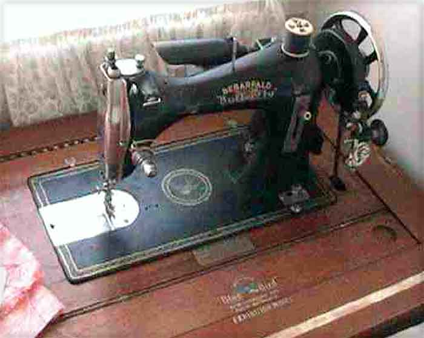
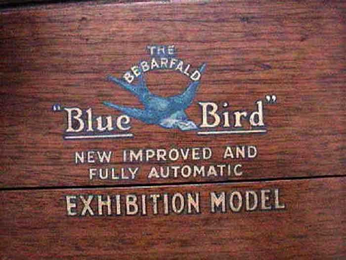
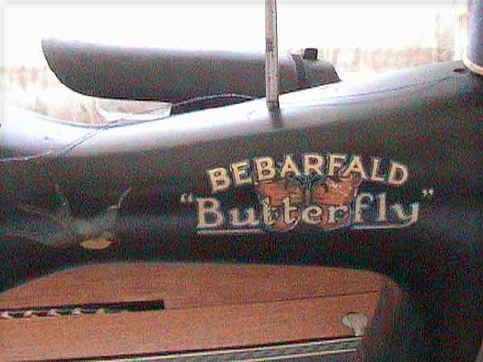

The NeedleBar
Bebarfald
George Street,
Sydney, NSW, (opp. Town Hall)
Model: Butterfly
Exhibition Model
Maker: National
Sewing Machine Company, USA
Pictures courtesy of Alan & Kerry
Front View

Logo Decal

Arm Decal

This page may not be reproduced
or distributed in part or in whole without the prior written permission of
the copyright owner